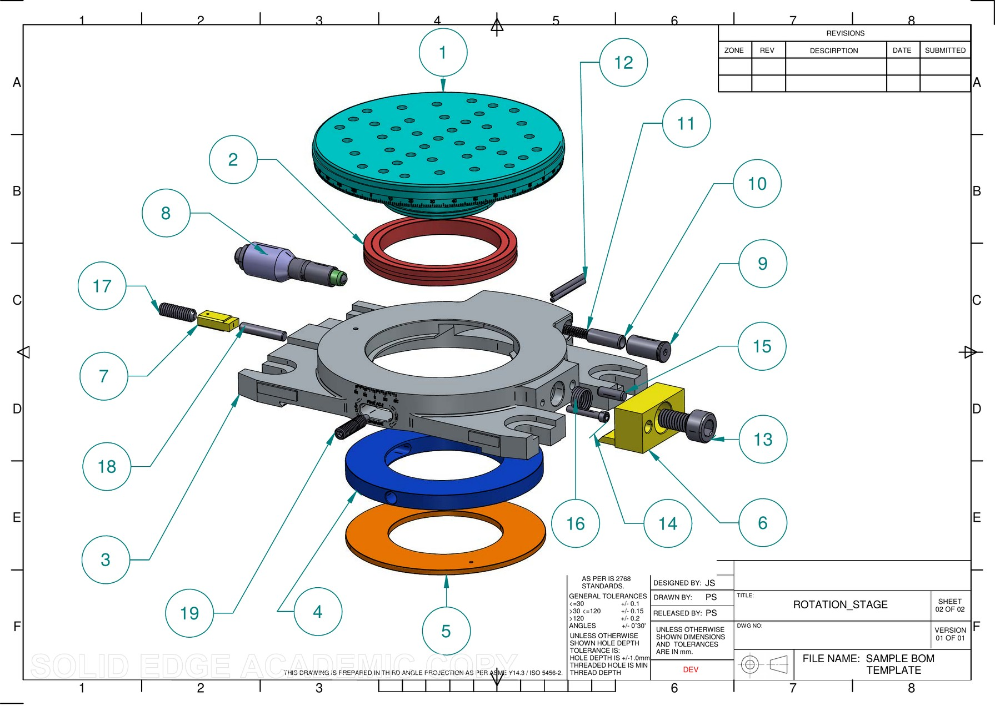
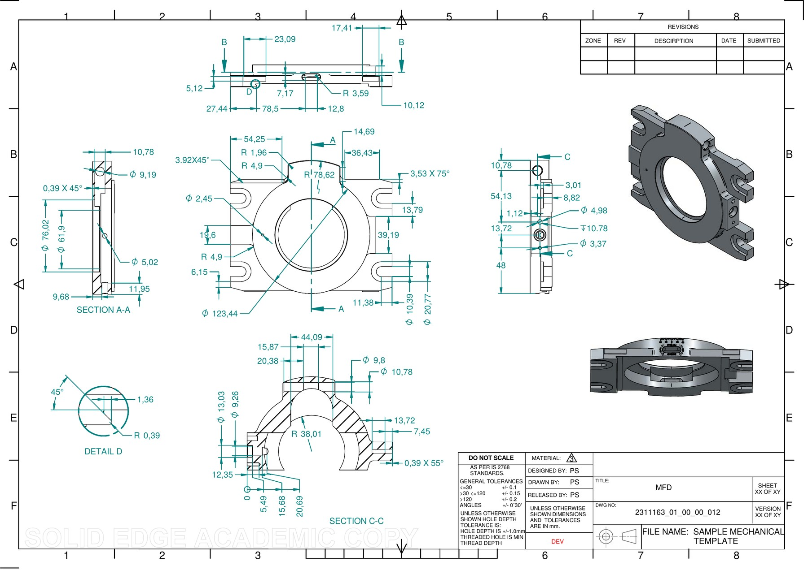
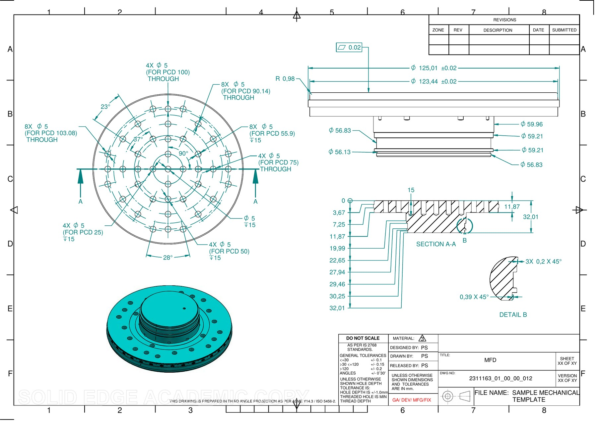
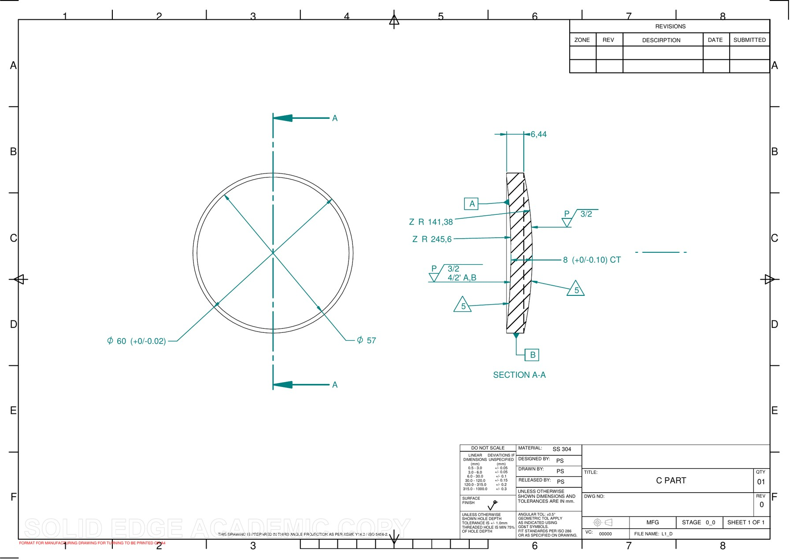

Final-year Mechanical Engineering undergraduate (SGSITS Indore) working across CAD, FEA, and multibody dynamics — from closed-form kinematic derivation through cross-validated simulation to interactive tools that let you explore the design space, not just read about it.
I work at the intersection of classical mechanism kinematics and modern simulation tooling. Most of my projects start with a governing equation on paper, get cross-validated numerically (often against a brute-force sweep — circle intersections, coordinate-descent optimizers), and end as either a CAE deliverable or a browser-based tool that makes the design space explorable in real time.
Recent work includes an ADAMS-convention front suspension kinematics simulator for a Baja SAE platform, a Preston-equation CMP process model with a derivation-backed physics-model reference, and structural/random-vibration documentation for an optomechanical mirror assembly (modal → PSD → post-processing across 80 modes).
Two-month internship at Avinya Miltech Pvt Ltd, Indore — CAD modelling in Creo Parametric & Solid Edge, GD&T drawing packages,BOM ANSYS Mechanical , and MSC Adams multibody simulation.
Prior internship as NPD Intern at Gabriel India Ltd., Dewas — verified and consolidated Bills of Material across 1000+ damper assemblies, ran DFMEA/PFMEA on suspension components, and applied Lean Six Sigma and MOST Analysis to streamline assembly-line workflows, with hands-on exposure to twin-tube, mono-tube, and strut damper architectures and SAP.
Multibody Dynamics Head, Team GS Racers (2025–26) — led the MBD division across suspension, steering, and powertrain analysis. 1st Rank, Validation Event E-BAJA 2026; 7th overall, M-BAJA 2024.
Full ADAMS-convention double-wishbone tool with a bump/droop travel sweep and real-time camber, toe, caster, KPI, and Ackermann telemetry. Includes dynamic wheel-track, mechanical trail, and kingpin-offset readouts, plus an AI Tuning tab driven by a coordinate-descent optimizer.
At Avinya Miltech, redesigned the 4-bar mechanism of a lens polishing machine to eliminate quick-return motion, then modelled the resulting Chemical-Mechanical- Polishing (CMP) machine's kinematics in MSC Adams — incorporating friction, RPM, and trajectory optimization. Derived concave/convex conic disc profiles from depth-of-cut vs. radial-distance data and calculated Material Removal Rate using Preston's equation for production planning. That analytical foundation became this simulator: a four-bar crank-rocker linkage driving pad motion, Preston- equation material removal, contact mechanics, and surface-topography fitting, with an Intelligent Planner tab (synchronized base/top-disc inputs, comparative per-disc graphs, toggleable cumulative wear-progression) and a LaTeX/TikZ physics-model reference with full first-principles derivations.
Designed and Modelled an opto-mechanical Mirror Mount Assembly and calculated its Natural frequencies of diffrent mode shapes by performing its Modal Analysis in Ansys Mechanical then after this i performed random vibration analysis on the assembly by giving PSD acceleration as the input and defined the tilt of the mirror under this condition.At last finished the project by preparing detailed Engg. Drawings of all the components,exploded view and BOM of the assembly
Designed front double-wishbone and rear H-arm suspension for a competition electric ATV, with full hardpoint definition in MSC Adams. Ran MBD simulations for camber/toe gain, roll centre migration, Ackermann percentage, and steering effort, then validated against four-post rig, sinusoidal ride, and drop-test analyses to extract ride frequencies and upright load cases. Designed jigs and fixtures for arm and steering-link manufacturing. As MBD Head for Team GS Racers, led this division and trained juniors on Creo, SolidWorks, and Adams.
Dynamic MBD analysis of the ATV gearbox and Differential to verify torque transfer, backlash ,and shaft alignment, alongside simulation of differential torque split under varying traction conditions. Performed plunge and articulation angle analysis of the half-shafts across full suspension travel to validate CV joint safety margins.
Modeled a reaction wheel assembly in Creo Parametric and simulated rotational dynamics in MSC Adams. Built a 3-axis Euler-dynamics attitude control architecture and validated the assembly's structural performance under load in ANSYS.
Modeled a rocker-bogie rover chassis in SolidWorks and implemented it in MSC Adams on a custom rough-terrain test track to evaluate articulation range and stability across obstacle traversal.
Complete 3D CAD assembly video of the competition electric ATV, encompassing the chassis, suspension, steering, and powertrain subsystems.
Six-wheel rocker-bogie chassis modelled in SolidWorks for rough-terrain articulation testing in MSC Adams.
Section View of 3-axis reaction wheel assembly modelled in Creo, validated structurally in ANSYS under simulated rotational loads.
A casual 3D modelling project of Thor's Stormbreaker axe, showcasing advanced surface modeling and detailing techniques.

Full exploded view of the precision rotation stage assembly, with balloon callouts against a 19-item bill of materials — bearing rings, drive motor, fasteners, and locating dowels fully itemized for procurement.

Machining drawing for the stage's main housing/flange — full section views (A-A, C-C), a 45° chamfer detail callout, and general tolerances per IS 2768.

Rotor/mounting plate with five concentric bolt-circle patterns (PCD 25 to 103.08mm) for multi-standard instrument mounting, plus a flatness callout and 45° edge-break detail.

Turned stainless-steel retaining ring — Ø60/Ø57mm with tight +0/-0.02mm tolerance, section view with surface-finish and flatness/parallelism callouts.
Full-vehicle MBD animation from the four-post rig analyses used to extract ride frequencies and upright load cases.
Full-vehicle MBD animation of the sinusoidal ride analysis used to evaluate suspension response and ride frequencies.
Adams animation of the reaction wheel assembly's rotational response under the 3-axis Euler-dynamics control architecture.
Adams animation of the rocker-bogie rover traversing a custom rough-terrain test track, evaluating articulation and stability.
Adams simulation of the ATV gearbox assembly with synchronized contact-torque plotting, verifying torque transfer and gear mesh behavior under load.
Problem Statement for any project to start working
Governing equations for the problem and closed-form relationships worked out first — coordinate conventions and assumptions stated explicitly.
Than modelling and CAE/MBD Analysis is done based on the req. of the problem statement
Findings packaged as a proper technical reference — derivations, diagrams, and results.